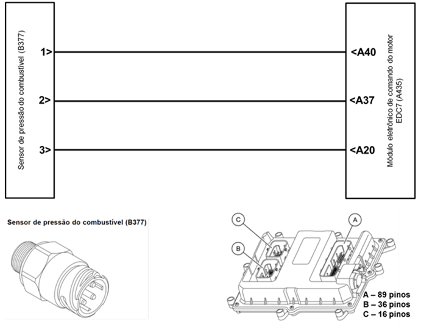
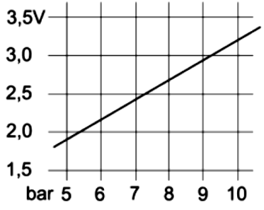

|

Descrição da Falha
Pressão de
alimentação de combustível, sinal muito alto.
Indicação de Falha
Luz de alerta acende constantemente
com símbolo  e
ativa o alarme sonoro curto, com o veículo andando quando desliga a luz
apaga só retorna quando posto em movimento. e
ativa o alarme sonoro curto, com o veículo andando quando desliga a luz
apaga só retorna quando posto em movimento.
A LIM permanece desligada.
Estratégia de Monitoramento
O
módulo EDC7 monitora através do sensor de pressão de combustível a
pressão do sistema de alimentação de combustível para determinar se
está em um nível normal de operação.
Efeito da Falha
O motor pode desligar,
eventualmente perda de potência.
Possíveis Falhas
FMI 1– Pressão de
alimentação de combustível, sinal muito alto devido a, por ex.:
– Filtro do combustível entupido.
– Sensor de pressão do combustível
com avaria.
– Válvula de descarga na bomba de
alta pressão não desliga.
FMI 2– Pressão de alimentação de combustível,
sinal muito baixo devido a, por ex.:
– Ventilação do depósito entupida.
– Pré-filtro entupido.
– Mau contacto na linha de sinais.
– Ar no sistema.
– Pressão de combustível muito
baixa na alimentação da bomba de alta pressão,
devido à pré-bomba de alimentação.
– Sistema de combustível a
funcionar em vazio com o motor parado devido a fuga.
– Válvula reguladora de pressão
avariada.
FMI 3– Sinal não plausível.
FMI 11– Mau contacto.
Aviso
  Não há
aviso específico para este código. Não há
aviso específico para este código.
Registros de Falhas em Outros
Módulos de Comando
Sim, PTM (Power Train Manager).
Considerar os esquemas elétricos do
veículo
| Verificação
|
Medição |
Eliminação
da Falha |
|
Sistema de combustível
|
Verificação de acordo com a lista de
etapas de verificação do sistema hidráulico
|
Eliminar a falha no circuito de baixa
pressão, de acordo com a lista de etapas de verificação
hidráulica
|
| Alimentação de tensão
do sensor de pressão do combustível |
Utilize o
Tester
Box e consulte o manual Verificação EDC7 C32:
- Medir a tensão entre Pin A40 (+) e
Pin A37 (–)
Valor nominal:
4,75 - 5,25 V.
|
– Verificar os cabos
quanto a rompimento ou oxidação
– Verificar as
conexões quanto a mau contato ou pinos tortos
– Substituir o sensor
de pressão de combustível
|
|
Tensão do sinal do sensor de pressão do
combustível
|
Utilize o Tester Box e
consulte o manual Verificação EDC7 C32:
- Medir a tensão entre Pin A20 (+) e Pin
A37 (–)
Valor nominal:
2,33 - 3,43 V
 |
Tester Box

|